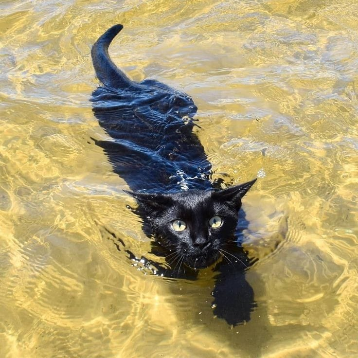

About Me
Hi, I’m Tan Tri. I am a student at Victoria University studying project management, cybersecurity, networking, and operating systems and now foundation of Web development. I enjoy learning how technology works and solving problems through hands-on practice.
Outside of study, I like building and upgrading PCs, gaming, digital art, and exploring local AI tools/hosting and configuring my own server. My goal is to keep developing practical technical skills that I can use in future IT and development roles.
Skills and Goals
- Basic networking, routing, switching, and DNS
- Linux and Windows system administration
- Cybersecurity fundamentals
- PC building and hardware troubleshooting
- Project planning and time management
- Goal: improve web development and cybersecurity skills
Useful Link
MDN Web Docs is a useful website for learning HTML, CSS, and JavaScript.
Favourite Image on the Internet

My Project
I am building this personal developer page to practise HTML, CSS, and JavaScript. My next goal is to make the page more interactive and improve my web development skills.
My Portfolio Projects
- Seven-Day Weather Forecast — search for a place and view temperature, rain, and wind.
- Country Explorer — search for a country and explore its details and map.